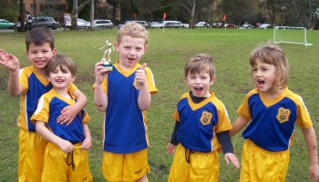
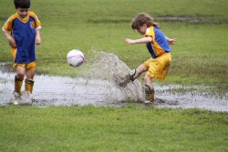
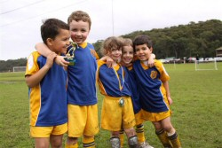
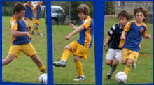
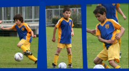
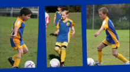
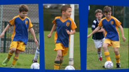

| Match Report - 11 July 2009 |
|
|
|
|
|
|
|
| U6 Purple |
North Ryde 1 - All Saints H/Hill B 10

|
|
|
|

Jayden was a like a knight in armour today, doing a chest
block of the ball whilst Lukah was kicking in.
Will did a great job kicking the balls in today, as did
Jasmine, both improving their range.
Lukah made an exciting goal save, sliding across the field
in front of the goal, whilst later scoring a goal!
Will got energetic around the goal today and got tangled
in the net... ooops! Jayden and
Cameron partnered well to block a goal together - great
teamwork boys!

Cameron tried really hard today to attack the ball more
and turn it around, and later did a great headblock whilst laying on the field.
First header of the season!
The team missed Lucas whilst he was sick today.
Congratulations to the Player of the Week - Cameron

After the game, Will shared what he loved about the game today...
Will: "Shooting a goal."
- Sally Last (Supermum)
|
|
|
| U6 Red C |
|
North Ryde Red C - Ryde Saints United A
|
|
|
|


We did good kicking, good running and scoring goals. It was fun because there was
a lot of water.
- Kate Kennedy (Player, aged 6)
|
|
|
|
|
|


A goal fest which had been coming all season and will be good for the confidence
coming in to the pointy end of the season.
We were two up within 7 minutes with the sharp shooting of Shannon who showed great
composure all game. Adam then scored one off a pass from Shannon to make it three
nil. The fourth was an own goal from a corner and I was beginning to feel sorry for
West Ryde Rovers.
We were playing well across the park and moving the ball out wide from Jett and


Thomas at the back. Jack had a turn at centre back and looked quite a home.
The second half started much the same and Shannon grabbed another brace to make it
a hatrick and a long range shot from David who never stopped running all day dipped
just under the bar. Charlie then scored a couple more to round off a great day.
We play West Ryde Rovers again in a few weeks time and will be looking for more of
the same.
- Mark Maclean
|
|
|
|
|
|
Well, the day started a chilly 11.5 Deg C and it didn't get much better. Right from
the kickoff, West Pennant Hills (WPH) was on the attack and it wasn't long after a
corner kick that they were shooting at our goal, but some great defence by Peter
saw the attempt quashed. Another corner kick ensured and this time it was Anaya
that was able to prevent a goal against us.
We were able to then take the ball to the other end of the field where we started
our attack but we were quickly shut down by a determined opposition.
Some great defence by Andrhea and Matt stopped another quick goal attempt by WPH.
Another corner kick saw a missed goal attempt by WPH. Eventually by the end of the
first half the score was 4-0 to WPH.
The second proved to be better. After some words by coach Alan Ball during half
time, the team seemed to come with Oscar and Rhea managing to set up and score our
only goal.
WPH were only able to score another two times with the score finally standing at
6-1 by the end of the game.
- Gary Renouf
|
|
|
|
|
|
North Ryde Nachos did a great job with defending in the First half - they were by
far the stronger side. The Nachos were hungry for a goal but alas the couple of
shots we had proved futile.
The second half unfortunately ended up with Beecroft scoring! The score didn't
really reflect how well the side played - should have been a draw was the
spectators opinion. Next time...
Kyle was voted Man of the Match
Bad luck NACHOS - next week let's go for a WIN. Go NACHOS!
- Jillian (Spectator)
|
|
|
|
|
|
A solid performance by the team this week against a team who certainly didn't have
anything over us in the way of ability (but maybe in age).
The boys got off to a flying start with Stephen B-H scoring the opening goal, but
West Ryde scored 2 unanswered goals for our boys to go 2-1 down. However the team
were having none of that and showing courage and commitment fought their way back
with goals to Sam B and Jordan C to take a 3-2 lead heading toward full time.
Alas a defensive lapse with time running out saw West Ryde score an equaliser to
earn an undeserved 3-3 draw as our boys had the better of the match for most of the
time. Don't worry boys we will get them next time.
- Bill Greer (Manager)
|